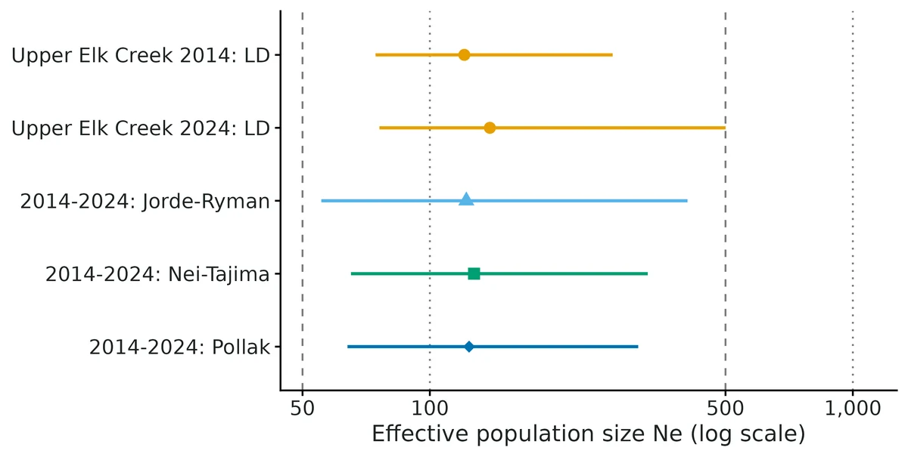
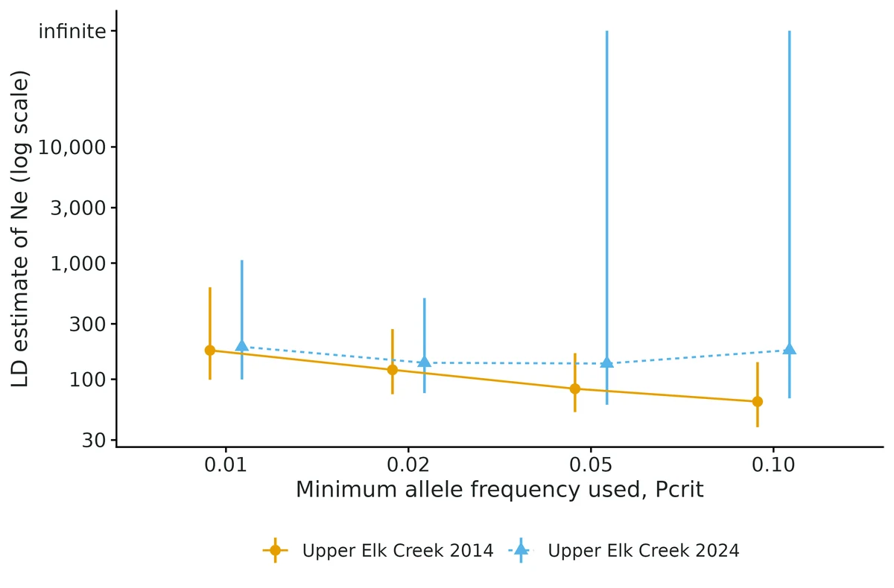
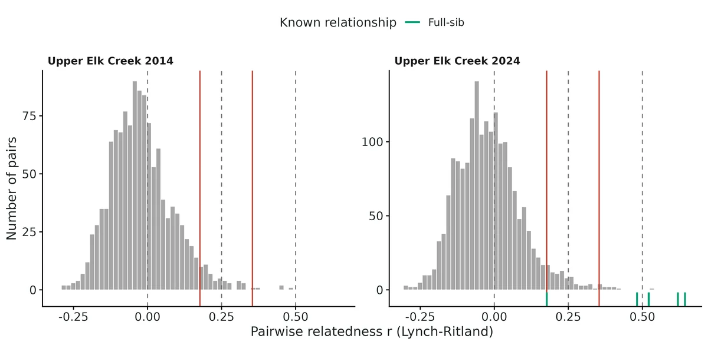
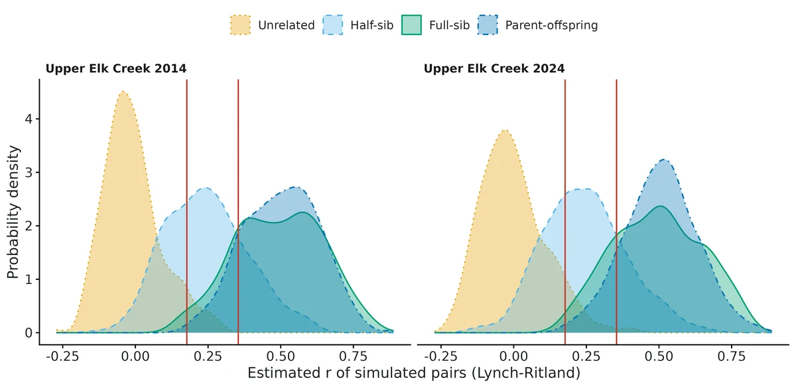

Effective population size and relatedness
Genotypes (microsatellites or SNPs) from one or more samples of a population; question is how large the genetically effective population is (Ne), how fast it is losing diversity, whether Ne is above conservation thresholds (50/100, 500/1000), and which sampled individuals are close relatives (full sibs, half sibs, parent-offspring).
Is this the right analysis?
Use it when
Genotypes (microsatellites or SNPs) from one or more samples of a population; question is how large the genetically effective population is (Ne), how fast it is losing diversity, whether Ne is above conservation thresholds (50/100, 500/1000), and which sampled individuals are close relatives (full sibs, half sibs, parent-offspring).
Not for
Population structure, FST, isolation by distance, assignment (use popgen-structure); demographic history over many generations (coalescent methods such as GONE/SNeP); census abundance (use capture-recapture or close-kin mark-recapture models); pedigree reconstruction with parentage likelihoods (COLONY, sequoia).
The data you need
One row per individual with population, optional sampling time and optional flag to exclude juveniles/siblings from Ne; diploid genotypes as two allele columns per locus, "152/160" single columns, SNP 0/1/2 dosages, GENEPOP or VCF; optional list of known relative pairs; optional census size and generation time for the temporal method.
What the example's main data file looks like:
| sample_id | site | year | life_stage | use_for_ne | Sco102_a | Sco102_b | Sco105_a |
|---|---|---|---|---|---|---|---|
| UEC-14-001 | UpperElkCreek | 2014 | adult | yes | 226 | 226 | 180 |
| UEC-14-002 | UpperElkCreek | 2014 | adult | yes | 226 | 238 | 196 |
| UEC-14-003 | UpperElkCreek | 2014 | adult | yes | 202 | 210 | 196 |
| UEC-14-004 | UpperElkCreek | 2014 | adult | yes | 210 | 226 | 196 |
| UEC-14-005 | UpperElkCreek | 2014 | adult | yes | 202 | 242 | 196 |
Not sure? Use the finder to compare modules.
The worked example
Effective population size and relatedness of a bull trout spawning population from two microsatellite samples (simulated data with known truth)
Bull trout (Salvelinus confluentus) are listed as threatened in the United States. They are cold-water char that spawn in small headwater streams. A biologist monitors one spawning population, Upper Elk Creek. Redd counts suggest about 120 spawning adults.
The question: How large is the genetically effective population (Ne) of the Upper Elk Creek bull trout, how fast is it losing heterozygosity, and can 16 microsatellites identify close relatives?
The data are simulated, so the true answer is known and the analysis can be checked against it.
What the researcher typed
I have microsatellite genotypes for bull trout from Upper Elk Creek in bulltrout_microsats.csv: 50 adults sampled in 2014 and 50 in 2024, 16 loci, two columns per locus, 0 = missing. There are also 12 juveniles from 2024, two from each of six redds; known_relationships.csv lists the nest-mate pairs. Generation time is about 5 years and redd counts suggest about 120 adults. Please estimate the effective population size and how fast the population is losing genetic diversity, and tell me whether the markers can identify relatives. I'd like a report with figures for a paper.
Run it yourself
Download the example data below and unzip it.
Open the unzipped folder in Claude Code (see Install).
Paste the prompt above. The agent checks the files, writes a plan, runs planted truth, fits the model and writes the report. You can compare your results with the ones below.
Contains bulltrout_microsats.csv, known_relationships.csv, the settings file (config.yaml), a description of the data and a step-by-step walkthrough.
Study design details
| species | bull trout (Salvelinus confluentus) |
|---|---|
| population | Upper Elk Creek |
| marker | microsatellite |
| n loci | 16 |
| alleles per locus observed | 5-9 |
| n samples | 2 |
| sample years | 2014, 2024 |
| adults per sample | 50 |
| juveniles known fullsib | 12 |
| known fullsib pairs | 6 |
| total individuals | 112 |
| missing genotype rate | 0.032 |
| generation time years | 5 |
| generations between | 2 |
| census N first sample | 120 |
| sampling plan | I |
| pcrit | 0.02 |
| format | two_column |
Results from the example data

In plain language
- Temporal method (2014 and 2024, 2.0 generations apart, sampling plan I, census N = 120): Jorde & Ryman's Fs' = 0.0082 gives Ne = 122 (95% CI 55.4 to 407). Nei-Tajima and Pollak estimators give 127 and 124.
- Sample 2014 (50 individuals, 16 loci): the linkage-disequilibrium estimate of Ne is 121 (95% CI 74.4 to 271). An Ne of this size loses about 0.41% of its heterozygosity per generation, about 4.1% over 10 generations, unless immigration or mutation replaces it.
- Sample 2024: the linkage-disequilibrium estimate of Ne is 139 (95% CI 76.0 to 500).
- The interval lies above 50 but reaches below 100: the population passes the classic short-term threshold (50) but not clearly the revised one (100; Frankham et al. 2014).
- Relatedness in sample 2024 (1891 pairs): 15 pairs have r >= 0.354 (likely first-degree) and 86 have 0.177 <= r < 0.354 (likely second-degree); about 7.0% of truly unrelated pairs would be called second-degree or closer; 80% of full sibs and 46% of half sibs fall in their own class.
- Known fullsib pairs (n = 6) have mean r = 0.494 (95% CI 0.296 to 0.693), against a pedigree expectation of 0.50.
- F_IS = 0.028 (95% CI -0.026 to 0.081) in 2014 and 0.004 (-0.025 to 0.032) in 2024: consistent with random mating.
- Ne is not census size; with separate sexes LD estimates ran about 5-25% above the true Ne in validation, whereas the temporal estimate was within 6%; treat a single LD estimate as slightly optimistic.
More figures



Figures are the module's default publication figures, reduced for the web. The report also saves them as PDF and full-resolution PNG.
Planted truth at the example's design
Before trusting the example's results, the module was run on many simulated data sets with the same design and known true values. Each row is one quantity: did the method get it back? (What the thresholds are.)
What OPEN means here. The module works (it passes at its default design), but at this example's design not every quantity passed the planted-truth check, so CascadiaTools does not certify those. 3 of the 5 quantities checked passed outright. For het loss LD early, het loss LD late, the estimate was biased (by up to 13%); don't interpret those at this design. The quantities that passed can be used as reported. With your own data, the report would say the same and suggest what would help: more data, a simpler model or a different estimator. More on DONE and OPEN.
Why, for this example:
Planted truth at this design: temporal het_loss (+1.6%, coverage 0.92) and full-sib relatedness (LR -2.1%, QG +3.9%) PASS; single-sample LD het_loss FAILS the 10% bias rule in both years (-13.1%, -11.5%; Ne overstated ~15%) because each sample is 42% of the population. Report temporal Ne 122 (55-407) as the answer; LD estimates are supporting, upward-leaning evidence only.
3 of 5 rows pass.
| Quantity | True value | Average estimate | Bias | Coverage | Result |
|---|---|---|---|---|---|
| het_loss_LD_early | 0.00417 | 0.00362 | -13.1% | 0.96 | ✗ FAIL |
| het_loss_LD_late | 0.00417 | 0.00369 | -11.5% | 0.95 | ✗ FAIL |
| het_loss_temporal | 0.00417 | 0.00423 | +1.6% | 0.92 | ✓ PASS |
| relatedness_fullsib_LR | 0.469 | 0.459 | -2.1% | 0.97 | ✓ PASS |
| relatedness_fullsib_QG | 0.469 | 0.487 | +3.9% | 0.96 | ✓ PASS |
Limits that matter
- LD Ne overstated when the sample is a large share of the population: at S = 50, N = 120 planted-truth LD 1/Ne bias -13%/-12% (gate FAIL).
- LD Ne overstated by 6-25% in separate-sex populations (independent verification); the simulator is monoecious, bull trout are not, so real LD bias may be larger. Temporal method unaffected.
- Overlapping generations not validated: a single-sample LD estimate for bull trout approximates the number of breeders (Nb), not per-generation Ne.
- Temporal method with < 3 generations between samples was outside module validation; this example's own recovery at 2 generations passes (bias +1.6%, coverage 0.92).
- Temporal CI relies on a simulation-calibrated design effect; coverage 0.90-0.92 with 15-20 microsatellites (nominal 0.95).
- With missing microsatellite data, LD Ne differs from NeEstimator by a median 1.7% (max 12%).
- Half-sib misclassification is under-predicted by the simulated-pair table; treat second-degree calls as tentative.
- Not validated: migration/structure, null alleles or genotyping error, selection. The module estimates Ne, never census N.
All known limits from the module's validation record
- LD Ne overestimated in separate-sex populations (independent verification): +6-25% in Ne (1/Ne bias -6% to -20%) with no selfing, worst with 20 microsatellites, skewed sex ratio or S a large share of N; LD coverage 0.76-0.91. The temporal method is unaffected. Monoecious controls pass.
- Ne overestimated when S << Ne. At S = 50 and Ne = 500, LD 1/Ne is biased -6% to -12% (Ne +7-14%; section 3, design grid). With 10 microsatellites and S = 25 the bias is large in either direction (grid: harmonic-mean Ne 39 at Ne 50, 267 at Ne 500). Report the interval, not the point estimate.
- LD jackknife CI is slightly narrow with many SNPs: coverage 0.91-0.93 at the default design (1,000 SNPs), 0.89-0.93 at Ne 500. It passes the gate but is below nominal; the parametric CI is far worse and is not used. At S = 200 the grid used the parametric CI and its coverage with SNPs was 0.20-0.58 (not the module's default; the power run in section 7 uses the jackknife at S = 200).
- Temporal CI relies on a simulation-calibrated design effect (constant 0.5) for correlated frequency change among loci in drift LD. Calibrated and tested only for unlinked loci, Wright-Fisher demography and 3-10 generations. With 15-20 microsatellites coverage is 0.90-0.905 (bound 0.885; nominal 0.95).
- Missing data, microsatellites: our LD estimate differs from NeEstimator's by a median 1.7% (max 12%) in Ne because alleles are screened per locus rather than per locus pair (section 8). Not a bias in recovery, but results will not reproduce NeEstimator to the digit when data are missing.
- Queller-Goodnight for unrelated pairs runs 7-13% more negative than the sample-relative truth (absolute 0.002); Lynch-Ritland (the default
rel_primary) does not. QG passes everywhere except the large-Ne design. - Relatedness CIs for class means are conservative (coverage 0.94-1.00; SE 1.2-1.5x the empirical SD).
- Half-sib misclassification is under-predicted by the simulated-pair table (section 9).
- Not validated: overlapping generations (LD estimates then approximate Nb; Waples et al. 2014), migration/structure, linked SNPs (all simulations use unlinked loci; tightly linked SNPs will bias LD Ne downward), selection, the monogamy mating option, null alleles/genotyping error, the bottleneck test under stepwise mutation, and the temporal method with fewer than 3 generations between samples.
- Simulations use Ne = N (ideal population); the module estimates Ne, never census N.
Engine, references and full details
Engine: R implementation of the NeEstimator v2 formulas (LDNe with jackknife CIs; temporal Jorde-Ryman, Nei-Tajima, Pollak), Queller-Goodnight and Lynch-Ritland moment estimators; cross-checked against the NeEstimator C program.
References
Waples 2006; Waples & Do 2008, 2010; Peel et al. 2013; Do et al. 2014 (NeEstimator v2); Jones, Ovenden & Wang 2016; Nei & Tajima 1981; Pollak 1983; Waples 1989; Jorde & Ryman 2007; Queller & Goodnight 1989; Lynch & Ritland 1999; Wang 2014; Manichaikul et al. 2010; Cornuet & Luikart 1996; Piry et al. 1999; Franklin 1980; Frankham et al. 2014; Franklin, Allendorf & Jamieson 2014; Frankham 1995; Waples & England 2011; Waples, Antao & Luikart 2014; Waples & Anderson 2017. Full citations in module.R (references).